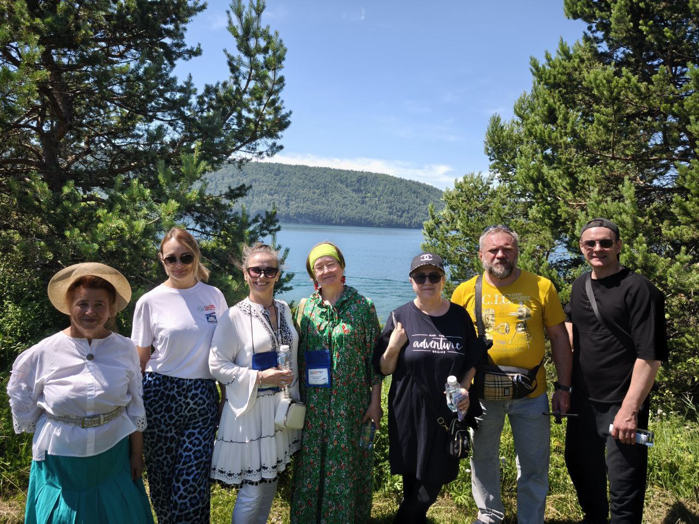
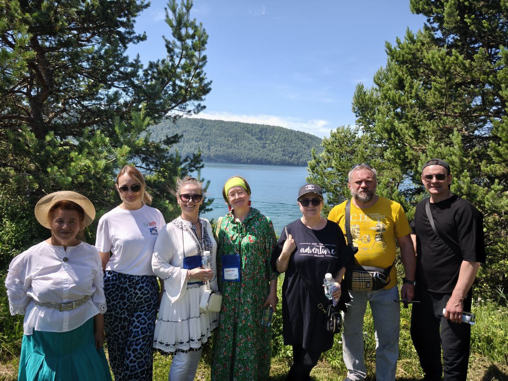

О десанте
"Северный десант"– единственный в России уникальный проект, погружающий зрителей в мир искусства
на краю русской земли. "Северный десант" - объединение артистов, музыкантов, творческих
людей – всех тех, кому не безразличны простые люди, их душа, мысли, надежды.
Это - братство единых духом и мировоззрением творцов, готовых преодолевать тысячи километров бездорожья,
чтобы поделиться теплом и талантом.


"Северный десант" - не только звёздные встречи, спектакли, концерты, мастер-классы, фестивальное кино,
сюрпризы, подарки.
Это - долгосрочная программа развития социально-культурной сферы Прибайкалья и Якутии. Всё для зрителей
на нём бесплатно.


"Северный десант" - это чистое, высокое искусство, без примеси и фальши. Это - праздник, который ждут
весь год и помнят всю жизнь. Это соединительная платформа для мультикультурного общения
между кинематографистами страны, их знакомство с сибирским краем. Это праздник творчества! Диалог сердец!


Этот культурный проект хорошо знаком жителям глубинки Иркутской области и Республика Саха (Якутия).
С 2014-го года, как во времена знаменитого фестиваля «Огни магистрали», приезжают сюда известные актеры
театра и кино с творческими встречами, спектаклями, мастер-классами, показами хороших фестивальных фильмов…
За девять лет порядка 30 заслуженных, народных, популярных и просто горячо любимых деятелей киноискусства,
среди них: Юрий Назаров, Светлана Тома, Ия Нинидзе, Эвклид Кюрдзидис, Марина Яковлева, Александр Носик,
Сергей Колесников, Оксана Сташенко, Олег Акулич, Ирина Лачина, Татьяна Абрамова, Игорь Ливанов,
Денис Матросов, Евгений Герчаков, Андрей Межулис, Сергей Горобченко, Ольга Хохлова, Олег Харитонов,
Алексей Барабаш и др., побывали в 27 отдаленных городах и поселках севера: Братске, Железногорске-Илимском,
Коршуновском, Янтале, Усть-Куте, Нии, Звездном, Верхнемаркове, Качуге, Ербогачёне, Киренске, Алексеевске,
Ленске, Тас-Юряхе, Мирном и др. Проведено более 250 мероприятий, которые посетили почти 75 тысяч человек.
Проект получил признание жителей и муниципалитетов данных территорий. Он проводится БЕСПЛАТНО для населения,
за счет спонсорских средств.
«СЕВЕРНЫЙ ДЕСАНТ» постоянно расширяет свои географию и список добрых дел. Он - уникален и является единственным в России. Его автор и руководитель – Татьяна ЖИНДАЕВА.
«СЕВЕРНЫЙ ДЕСАНТ» постоянно расширяет свои географию и список добрых дел. Он - уникален и является единственным в России. Его автор и руководитель – Татьяна ЖИНДАЕВА.

Татьяна Николаевна ЖИНДАЕВА, журналист, продюсер, автор нескольких телевизионных проектов
на областном и городском телеканалах, предприниматель почти с 30-летним стажем, член Союза журналистов России.
С отличием окончила Иркутский госуниверситет. Родом из Забайкалья, живет и работает в Иркутске.
Трудовой путь начала в коллективе Иркутского завода радиоприёмников. В комитете комсомола предприятия и как член райкома комсомола была одним из инициаторов движения МЖК (Молодежный Жилой Комплекс) на заводе и в Свердловском районе г. Иркутска. Вместе с десятками других молодых людей строила жилье для себя и города. В начале 90-х была приглашена на должность руководителя рекламной службы в газету «Комсомольская правда – Байкал». Под её руководством эта газета стала одним из лучших подразделений в АО ИД «Комсомольская правда».
В начале 2000-х открыла свое предприятие – ООО «ТМИН» (Творческая мастерская интересных находок), где работает директором по н. в. Занимается пиаром производителей товаров и услуг, выборными компаниями всех уровней, а также организацией и проведением корпоративных мероприятий и праздников, гастрольных туров. На местном, городском телеканале «АИСТ» (Альтернативная Иркутская Студия Телевидения) много лет выпускала авторскую программу по новым технологиям «Выше крыши».
С 2013 года при содействии Союза дорожников Иркутской области запустила на региональных телеканалах новый авторский проект «Прямое сообщение» - программу о дорогах и дорожниках, которая успешно действует по сей день. С телеэкрана рассказывает о нелегком, но очень важном для страны и нужном каждому россиянину труде дорожников; о том, насколько эта профессия востребована и современна.
С 2014 года занимается еще одним авторским проектом, уже в сфере культуры, - «Северный десант».
Трудовой путь начала в коллективе Иркутского завода радиоприёмников. В комитете комсомола предприятия и как член райкома комсомола была одним из инициаторов движения МЖК (Молодежный Жилой Комплекс) на заводе и в Свердловском районе г. Иркутска. Вместе с десятками других молодых людей строила жилье для себя и города. В начале 90-х была приглашена на должность руководителя рекламной службы в газету «Комсомольская правда – Байкал». Под её руководством эта газета стала одним из лучших подразделений в АО ИД «Комсомольская правда».
В начале 2000-х открыла свое предприятие – ООО «ТМИН» (Творческая мастерская интересных находок), где работает директором по н. в. Занимается пиаром производителей товаров и услуг, выборными компаниями всех уровней, а также организацией и проведением корпоративных мероприятий и праздников, гастрольных туров. На местном, городском телеканале «АИСТ» (Альтернативная Иркутская Студия Телевидения) много лет выпускала авторскую программу по новым технологиям «Выше крыши».
С 2013 года при содействии Союза дорожников Иркутской области запустила на региональных телеканалах новый авторский проект «Прямое сообщение» - программу о дорогах и дорожниках, которая успешно действует по сей день. С телеэкрана рассказывает о нелегком, но очень важном для страны и нужном каждому россиянину труде дорожников; о том, насколько эта профессия востребована и современна.
С 2014 года занимается еще одним авторским проектом, уже в сфере культуры, - «Северный десант».
ПРЕСС-РЕЛИЗ "СЕВЕРНЫЙ ДЕСАНТ – 2025": ИТОГИ 11-ГО СЕЗОНА
25 июня – 15 июля. Восточная Сибирь. 4000 километров вдохновения. Тысячи радостных лиц,
тысячи благодарных сердец и один большой праздник культуры.
Одиннадцатый сезон проекта «Северный десант» завершён. На этот раз творческий вектор, словно свет маяка, прошёл через 15 точек Восточной Сибири, озаряя сцены, клубы, школьные залы и импровизированные подмостки огоньком настоящего искусства.
Одиннадцатый сезон проекта «Северный десант» завершён. На этот раз творческий вектор, словно свет маяка, прошёл через 15 точек Восточной Сибири, озаряя сцены, клубы, школьные залы и импровизированные подмостки огоньком настоящего искусства.
🎯 ВАЖНАЯ ПОВЕСТКА
Сезон стал трибуной сразу для нескольких тем, значимых для всей страны:
80-летие Великой Победы, Год Защитника Отечества, 25-летие Иркутской нефтяной
компании. Юбилеи городов и поселков: 250-летие Киренска, 60-лет
Железногорску-Илимскому, 380 лет посёлку Макарово.
«Северный десант» подарил этим событиям человеческое лицо и креатив – через творчество, через искренний разговор, через слёзы и смех зрителей.
«Северный десант» подарил этим событиям человеческое лицо и креатив – через творчество, через искренний разговор, через слёзы и смех зрителей.
🗺 МАРШРУТНАЯ КАРТА
Десант прошёл по 15 географически точкам Прибайкалья: Иркутск, Усть-Кут, Яракта,
Верхнемарково, Янталь, Ния, Звездный, ИЗП, Киренск, Казачинское, Железногорск-Илимский,
Новая Игирма, Коршуновский, Качуг, Анга.
Творческая экспедиция преодолела около 4000 километров – по воздуху, асфальту и бездорожью. Где-то артисты выступали на современной сцене, где-то – на дощатом настиле под открытым небом. Но каждый раз – с полной самоотдачей.
Творческая экспедиция преодолела около 4000 километров – по воздуху, асфальту и бездорожью. Где-то артисты выступали на современной сцене, где-то – на дощатом настиле под открытым небом. Но каждый раз – с полной самоотдачей.
🌟 АРТИСТЫ, КОТОРЫЕ ЗАЖИГАЛИ
Север принял артистов, как своих:
🎭 Сергей Апрельский
🎬 Михаил Химичев
🎤 Ирина Горкунова
🎙 Алексей Аникин
🌍 Международный гость, заслуженная артистка Гагаузии Людмила Тукан.
После концертов – традиционные «автограф-минутки», живой диалог с публикой и множество совместных фото, которые теперь украшают домашние альбомы сибиряков.
🎭 Сергей Апрельский
🎬 Михаил Химичев
🎤 Ирина Горкунова
🎙 Алексей Аникин
🌍 Международный гость, заслуженная артистка Гагаузии Людмила Тукан.
После концертов – традиционные «автограф-минутки», живой диалог с публикой и множество совместных фото, которые теперь украшают домашние альбомы сибиряков.
🎬 КИНОХОРОВОД – ДЕТСКИЙ ФЕСТИВАЛЬ С БОЛЬШОЙ ДУШОЙ
Второй год подряд в Усть-Куте прошёл фестиваль кино для детей "КиноХоровод.
Наследники Победы".
8 детских команд, 9 муниципалитетов Прибайкалья, 14 короткометражных фильмов, снятых за одну неделю. 3 месяца подготовки на курсе "Пишем своё кино". Гран-при – у команды из Усть-Кута за новеллу "Ну, охотник!".
Фестиваль стал настоящей школой жизни: дети учились у мастеров режиссуры, актёрского мастерства, операторского дела, написали сотни писем бойцам СВО, сделали обереги, а главное – поверили в силу своего таланта.
В команде фестиваля – опытные профессионалы:
Наталья Носкова, Анна Харламенко, Юлия Горбачевская, Александра Селезнева, Аркадий Стародубцев, Марат Абдрашитов, Ирина Горкунова и, конечно, Татьяна Жиндаева – автор, продюсер, сердце проекта.
Следующая тема фестиваля – "СИБИРЬ – любовь моя!”
8 детских команд, 9 муниципалитетов Прибайкалья, 14 короткометражных фильмов, снятых за одну неделю. 3 месяца подготовки на курсе "Пишем своё кино". Гран-при – у команды из Усть-Кута за новеллу "Ну, охотник!".
Фестиваль стал настоящей школой жизни: дети учились у мастеров режиссуры, актёрского мастерства, операторского дела, написали сотни писем бойцам СВО, сделали обереги, а главное – поверили в силу своего таланта.
В команде фестиваля – опытные профессионалы:
Наталья Носкова, Анна Харламенко, Юлия Горбачевская, Александра Селезнева, Аркадий Стародубцев, Марат Абдрашитов, Ирина Горкунова и, конечно, Татьяна Жиндаева – автор, продюсер, сердце проекта.
Следующая тема фестиваля – "СИБИРЬ – любовь моя!”
📸 ПРОГРАММА В ЛИЦАХ И ФАКТАХ
Более 100 мероприятий.
Около 3000 зрителей.
Мастер-классы по актёрскому мастерству, цифровым технологиям, нейросетям Осмысленные кинопоказы патриотических фильмов. Фотовыставка "Мобилография" Благотворительные акции Пресс-конференции и выступления перед журналистами
Мастер-классы по актёрскому мастерству, цифровым технологиям, нейросетям Осмысленные кинопоказы патриотических фильмов. Фотовыставка "Мобилография" Благотворительные акции Пресс-конференции и выступления перед журналистами
🤝 ПАРТНЕРЫ – СИЛА ПЛЕЧА
Благодарим тех, кто поддержал "Северный десант – 2025":
Сергей Геннадьевич Анисимов (Усть-Кутский район);
Евгений Владимирович Кокшаров (г. Усть-Кут);
Игорь Николаевич Потапов (Казаченско-Ленский район);
Кирилл Викторович Свистелин (Киренский район);
Руслан Николаевич Болотов (Иркутск);
Евгений Владимирович Липатов (Качугский район).
АО "Международный аэропорт Иркутск" (А.О. Скуба).
АО "Труд" (С.Н. Томшин).
ООО "Сибна" (С.П. Глухов).
ИГТРК (О.Г. Ринчинова).
ТиВиСи (Г.В. Тюрнева).
НТС Иркутск (Д.А. Акулов).
ТРК "Диалог" (Д.О. Баженова).
Газета "Мои года" (А.С. Выборов).
"Ленские вести" (Н.В. Шведова).
ИРА "Телеинформ" (Д.Г. Цырендагбаева).
ИД "Байкал 24" (В.Н. Кочетов).
🔹 Муниципалитеты:
Максим Сергеевич Романов (Нижнеилимский район);Сергей Геннадьевич Анисимов (Усть-Кутский район);
Евгений Владимирович Кокшаров (г. Усть-Кут);
Игорь Николаевич Потапов (Казаченско-Ленский район);
Кирилл Викторович Свистелин (Киренский район);
Руслан Николаевич Болотов (Иркутск);
Евгений Владимирович Липатов (Качугский район).
🔹 Компании:
АО “ИНК - Капитал" (Николай Михайлович Буйнов, Марина Владимировна Седых) - генеральные партнёры.АО "Международный аэропорт Иркутск" (А.О. Скуба).
АО "Труд" (С.Н. Томшин).
ООО "Сибна" (С.П. Глухов).
🔹 Медиа:
Газета "Областная" (Д.Г. Люстрицкий).ИГТРК (О.Г. Ринчинова).
ТиВиСи (Г.В. Тюрнева).
НТС Иркутск (Д.А. Акулов).
ТРК "Диалог" (Д.О. Баженова).
Газета "Мои года" (А.С. Выборов).
"Ленские вести" (Н.В. Шведова).
ИРА "Телеинформ" (Д.Г. Цырендагбаева).
ИД "Байкал 24" (В.Н. Кочетов).
📝 ГОЛОС НАРОДА
Отзывы из каждого населённого пункта – будто одна песня, в которой главные
слова:
"Спасибо за свет. За тепло. За то, что к нам приехали. Вернитесь снова."
"Северный десант – 2025" завершён. Но его след остался в сердцах. И он обязательно вернётся.
"Спасибо за свет. За тепло. За то, что к нам приехали. Вернитесь снова."
"Северный десант – 2025" завершён. Но его след остался в сердцах. И он обязательно вернётся.
ПРЕСС-РЕЛИЗ
Культурный проект «СЕВЕРНЫЙ ДЕСАНТ» и Фестиваль кино для детей «КИНОХОРОВОД. Наследники Победы»
ОДИННАДЦАТЫЙ СЕЗОН
ДАТЫ ПРОВЕДЕНИЯ:
25 июня – 15 июля 2025 года.ПОСВЯЩЕНИЕ:
80-летию Великой Победы, Году защитника Отечества, 25-летию ООО «ИНК», а также юбилеям населённых пунктов: 60-летию г. Железногорск - Илимский, 250-летию г. Киренск и 380-летию с. Макарово.О ПРОЕКТЕ
Культурный проект «Северный десант» и его кинематографическое событие – Фестиваль кино для детей «КиноХоровод. Наследники Победы» – это уникальная инициатива, объединяющая артистов, музыкантов и деятелей культуры для творческих встреч с жителями отдалённых сибирских поселений и развития талантов юных сибиряков. Это ежегодное событие, несущее высокое искусство, диалог сердец и праздник творчества через творческие встречи, концерты, спектакли, мастер-классы, кинопоказы и благотворительные акции. Проект, длящийся уже 11-й год, поддерживает развитие культуры Прибайкалья и организует детский фестиваль «КиноХоровод».

ЦЕЛИ И ЗАДАЧИ «СЕВЕРНОГО ДЕСАНТА»
Популяризация творчества: привнесение высокого искусства в отдалённые сибирские территории.
Культурное объединение: сближение деятелей культуры и местных жителей через творческий диалог.
Социальная поддержка: повышение качества жизни сибиряков через доступ к культурным мероприятиям.
Развитие Прибайкалья: содействие социально-культурному прогрессу региона.
Поддержка детей: организация онлайн-фотошколы «Мобилография» и кинофестиваля с большой обучающей кинематографической программой.
Проведение мероприятий: организация безвозмездных творческих встреч, концертов, спектаклей, кинопоказов, выставок и мастер-классов.
Вовлечение аудитории: создание диалоговых площадок для общения артистов и зрителей.
Расширение программы: внедрение новых идей, таких как онлайн-школы и мастер-классы по актуальным направлениям (блогерство, семейная мемуаристика, нейросети, кинопедагогика), благотворительные акции.
Привлечение партнёров: сотрудничество с новыми и постоянными спонсорами для реализации проектов.
Знакомство с регионом: продвижение культурного обмена между кинематографистами и сибирским краем.
Ценности: Воспитание патриотизма и уважения к родному языку и летописи отчего дома через искусство – фото, кино, выставки... Развитие творческого потенциала детей и молодёжи.
МАРШРУТ
Фестиваль охватит 15 населённых пунктов Иркутской области:
Янталь (30.06),
ИЗП (01.07),
Новая Игирма (02.07),
Железногорск-Илимский и Коршуновский (03.07),
Усть-Кут (04.07),
Яракта (05.07),
Верхнемарково (06.07),
Ния и Звёздный (07.07),
Казачинское (08.07),
Макарово (09.07),
Киренск (10-11.07),
Иркутск (12-13.07),
Качуг и Ангарск (14-15.07).
ПРОГРАММА
“Северный десант” (СД):
Творческие встречи с актёрами, мастер-классы по актёрскому искусству, нейросети и мобилографии, фотовыставка, осмысленные кинопросмотры, пресс-конференции, фотосессии.
Детский фестиваль “КиноХоровод” (ДКХ):
Съёмки короткометражных художественных фильмов детьми при наставничестве профессиональных сценаристов, режиссёров, актёров, музыкантов, операторов, педагогов-кураторов.

Семейный киноклуб
Осмысленные кинопоказы патриотических фильмов из советской и российской классики с обсуждением: «Сын полка» (1946), «Женя, Женечка и «Катюша» (1967), «На войне, как на войне» (1968), «Подранки» (1976), «Солдат и слон» (1977), «Ожидание полковника Шалыгина» (1981), «В бой идут одни старики» (1987), «Знаешь, мама, где я был» (2017), «Солдатик» (2018), «Сестрёнка» (2019).
Фотовыставка «Мобилография»
Презентация лучших работ участников фотошколы. Конкурс фото на приз зрительских симпатий.
Экскурсии и благотворительные акции
Посещение местных достопримечательностей, музеев, буровых и детских домов.
УЧАСТНИКИ
“Северный десант» - команда из 9 профессионалов.
Актёры:
СЕРГЕЙ АПРЕЛЬСКИЙ – актёр театра и кино, режиссёр, сценарист (131 кинопроект).
АЛЕКСЕЙ АНИКИН – актёр театра и кино, режиссёр, сценарист (116 кинопроектов).
МИХАИЛ ХИМИЧЕВ – актёр театра и кино (80 кинопроектов).
ЛЮДМИЛА ТУКАН – заслуженная артистка Гагаузии (Молдова), певица, поэтесса, композитор, лауреат международных конкурсов.
Орг. группа:
Татьяна ЖИНДАЕВА, автор и руководитель проекта.
Анна ХАРЛАМЕНКО – пресс-секретарь.
Ирина ГОРКУНОВА – кинопедагог, актриса театра и кино.
Дмитрий КАЗАНЦЕВ - звукорежиссёр.
Марат АБДУРАШИТОВ – видеограф.
КЛЮЧЕВЫЕ СОБЫТИЯ
«КиноХоровод»
25 июня – 5 июля, Усть-Кут, II Фестиваль кино для детей «КиноХоровод. Наследники Победы»: мастер-классы, съёмки фильмов, кинопоказы, экскурсии, песенные хороводы, вечера знакомств.

27 июня – церемония открытия фестиваля с участием актёров-десантников.
3 июля – конкурс детских короткометражных фильмов по теме «Наследники Победы».
4 июля - церемония закрытия «КиноХоровода» с показом детских фильмов – победителей конкурса и участием актёров-десантников
«Северный десант»
30 июня – 15 июля: творческие встречи, фотосессии, кинопоказы, мастер-классы и фотовыставка - по маршруту десанта.
НЕМНОГО ИСТОРИИ
Проект родился в 2014 году, как альтернатива или продолжение действовавшего в годы БАМа фестиваля " Огни магистрали".
Когда строилась Байкало-Амурская магистраль, туда постоянно приезжали известные певцы, актеры, поэты, писатели и даже был свой ежегодный фестиваль. Потом всё "замерло" из-за смены государственности, дальней географии, сурового климата, бездорожья, дороговизны, ушедших традиций...
Энтузиасты и спонсоры при поддержке местных властей сотворили чудо - придумали новый, постоянно действующий культурный проект "Северный десант". И ему уже 11 лет!
За это время десантники выступили в 28 населённых пунктах; своим талантом поделились 32 известных актёра театра и кино; проведено более 330 мероприятий; задействовано 85 тысяч зрителей, преодолено почти 30 000 километров сложных сибирских дорог.

ПАРТНЕРЫ И ПОМОЩНИКИ
Все годы проект активно поддерживают Правительство и Законодательное собрание Иркутской области, администрации Усть-Кутского, Нижнеилимского, Киренского, Катангского, Качугского районов Прибайкалья, Ленского и Мирнинского наслегов Республики Саха. Десант реализуется на столь обширных территориях Севера России благодаря помощи бизнес-сообщества: ООО «СИБНА», АО «Труд», АО «Международный аэропорт «Иркутск», ООО «Киренский речной порт», ООО «ТМИН» и других во главе с главным единомышленником и соорганизатором проекта - генеральным партнером АО "ИНК - Капитал" и Иркутской нефтяной компанией. Информационную составляющую обеспечивают: ВГТРК/ИГТРК, ОГАУ «Медиа-центр «Прибайкалье» (газета «Областная» и ТК АИСТ), ТИВИСИ, НТС, ТРК «Диалог», Ленские вести, ИА «Телеинформ» и др.
ПРИСОЕДИНЯЙТЕСЬ к «Северному Десанту» и «КиноХороводу» – станьте частью большого культурного праздника, посвящённого Победе и творчеству!